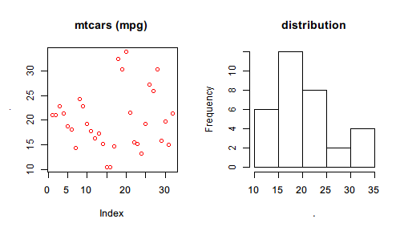
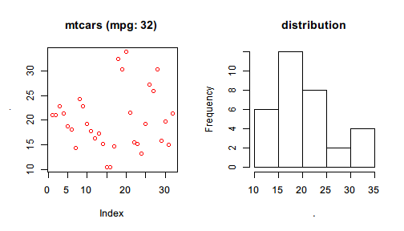
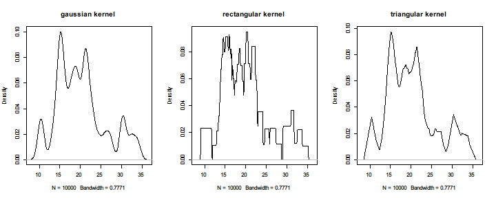

Not all functions are pipe-friendly in every case: You may find some functions do not take your data produced by a pipeline as the first argument. In this case, you can enclose your expression by {} or () so that %>>% will use . to represent the value on the left and evaluate the enclosed expression.
For the linear model example, one can rewrite lm(formula = ) to
mtcars %>>%
{ lm(mpg ~ cyl + wt, data = .) }
#
# Call:
# lm(formula = mpg ~ cyl + wt, data = .)
#
# Coefficients:
# (Intercept) cyl wt
# 39.686 -1.508 -3.191
or
mtcars %>>%
( lm(mpg ~ cyl + wt, data = .) )
#
# Call:
# lm(formula = mpg ~ cyl + wt, data = .)
#
# Coefficients:
# (Intercept) cyl wt
# 39.686 -1.508 -3.191
The difference between {} and () used above is
{} accepts more than one expressions within the braces and its value is determined by the last one; but () accepts only one expression.{} has only one feature: pipe to . in the enclosed expression while () has more features (we will cover them soon).To demonstrate the difference, we run the following examples.
mtcars %>>% {
model <- lm(mpg ~ wt + cyl, data = .)
summ <- summary(model)
summ[c("r.squared","adj.r.squared")]
}
# $r.squared
# [1] 0.8302274
#
# $adj.r.squared
# [1] 0.8185189
It shows that {} holds a code block whose value is determined by the last expression or interrupted by return().
mtcars %>>%
lm(formula = mpg ~ wt + cyl) %>>%
summary %>>% {
if(.$r.squared >= 0.8) {
return("Model A")
}
cat("Model B should be considered.\n")
"Model B"
}
# [1] "Model A"
One thing to notice is that {} is more flexible than previously demonstrated. It also allows using %>>% within the braces as well as causing side effect such as plotting graphics.
mtcars %>>% {
par(mfrow=c(1,2))
.$mpg %>>% plot(col = "red", main="mtcars (mpg)")
.$mpg %>>% hist(main = "distribution")
}

Another thing is that the meaning of nested dots are always determined by the working operator for that dot symbol. For example, the above code can be refined to
mtcars %>>% {
par(mfrow=c(1,2))
.$mpg %>>% plot(col = "red", main=sprintf("mtcars (mpg: %d)",length(.)))
.$mpg %>>% hist(main = "distribution")
}

It should be obvious that . below par() belong to the first %>>% that works with mtcars while . in length() belong to the operator that works with .$mpg so that it can correctly show the length of mpg (32) rather than that of mtcars (11).
The expression will be evaluated with speically defined . if it is enclosed by {} or (). If an anonymous function, that is, a function definition without a name, is enclosed, the pipeline will result in a closure, a function returned by a function (%>>%) which can be used more times.
In the following example, we create a closure that takes one argument: the kernel method with which to perform the nonparametric density estimation of resampled mtcars$mpg.
density_plot <- mtcars$mpg %>>%
sample(size = 10000, replace = TRUE) %>>%
(function(kernel) {
. %>>%
density(kernel = kernel) %>>%
plot(main = sprintf("%s kernel", kernel))
})
We just create a closure called density_plot. Then we can call it with different kernels to see the differece between the density plots of each other.
par(mfrow=c(1,3))
density_plot("gaussian")
density_plot("rectangular")
density_plot("triangular")

However, if the enclosed function is called directly in the pipeline, %>>% will pipe the left value to its first argument because here the only difference between first-argument piping examples and this example is the function no longer has a name but created inline.
1:10 %>>% (function(x,pow) x^pow)(2)
# [1] 1 4 9 16 25 36 49 64 81 100
A more complicated example is
mtcars %>>%
lm(formula = mpg ~ wt + cyl) %>>%
(function(model, warn_level) {
if(summary(model)$r.squared < warn_level)
warning("r.squared is too low", call. = FALSE)
model
})(0.9) %>>%
coef
# Warning: r.squared is too low
# (Intercept) wt cyl
# 39.686261 -3.190972 -1.507795
where an anonymous function is defined inline and %>>% following lm() pipes the linear model to the first argument of the anonymous function.